Research & engineering portfolio
Machine metacognition · assistive hardware · civic systems
Status as of November 2026
Nothing here is described as published.
Under review at IEEE ICASSP 2027. Single author.
Accepted as an e-poster at the Korean Society of Medical Informatics 2026 autumn conference. First author.
Submitted to the Google DeepMind and Kaggle AGI benchmark challenge, Metacognition track.
Manuscript. Extended abstract filed September 2026.
Manuscript.
Manuscript.
Unpublished manuscript.
In draft.
10 honors
Selected for the central review interview, November 2026.
Final Round qualifier.
Reached the finals with team 영점, October 2026.
31st International Youth Diplomacy Forum (DIFOS), 2026.
John Locke Essay Competition, 2025.
5th Plastic-Free Competition, HOBY Korea, 2025.
4th Plastic-Free Competition, HOBY Korea, 2024.
Ministry of Gender Equality and Family, 2025 and 2024.
KIECC UN SDG International Speech Competition, 2024.
ICAE International Conference on the Global Environment, 2024.
Scripts and run records for anything here are available on request.
8 projects · tap one to open
← Research
Submitted April 2026. Code and data public
A benchmark that asks whether a language model notices a hidden flaw before it answers.
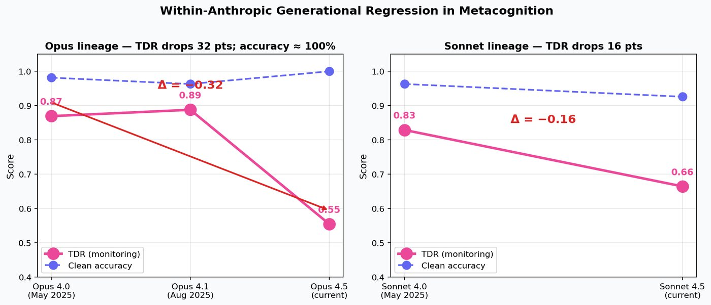
← Research
Under review, IEEE ICASSP 2027
Temperature scaling repairs a model's confidence with a single number. This paper predicts where that single number will fail.
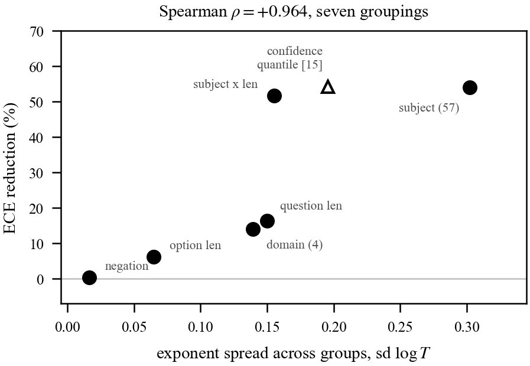
← Research
Manuscript. Water bench still a plan
A closed form for how to spread power across a surface cooled by a single pass of coolant.
← Research
Research harness in progress
Can a system tell which of its own changes are improvements? A predict-then-measure loop for testing that on the road from AGI to ASI.
← Research
Unpublished manuscript
Does a transformer ignore changes that should not matter? A framework that measures sensitivity only along meaning-preserving changes.
← Research
Accepted e-poster, KOSMI 2026. Library public
Clinical rules for older patients often depend on a diagnosis. I traced where that condition disappears from national health data.
npm test reruns 401 checks against the source article. Then a study of what those rules lose in national data.← Research
Manuscript
An ablation study on 25 public interactive games, built to find which part of an agent is the actual bottleneck.
← Research
Late entry, unranked. Code public
A data-centric LoRA on a 30B reasoning model, plus an analysis of how much of the benchmark can be solved at all.
4 projects · tap one to open
← Hardware
Design and simulation only. No pod has been built
Solar cold storage for smallholder horticulture in sub-Saharan Africa, with the payment and record layer that runs on it.
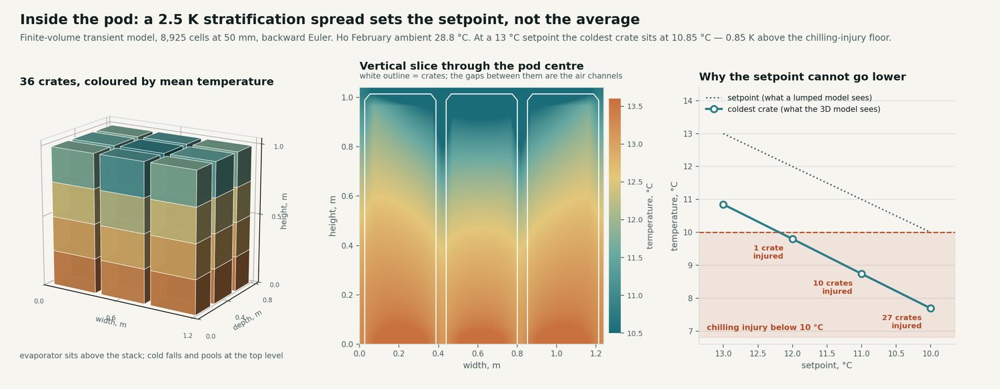
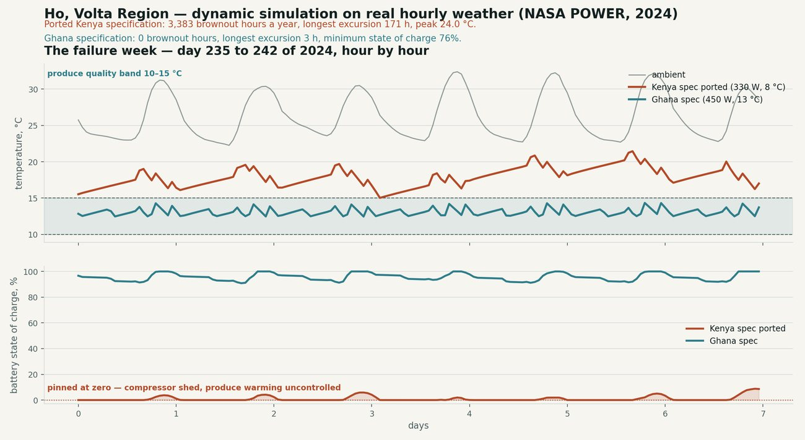
← Hardware
Simulation plus public EMG data. No robots built
A brain interface streams about 9.5 bits per second. Direct control of 100 robots needs about 192,000. How much of a swarm can one person steer?
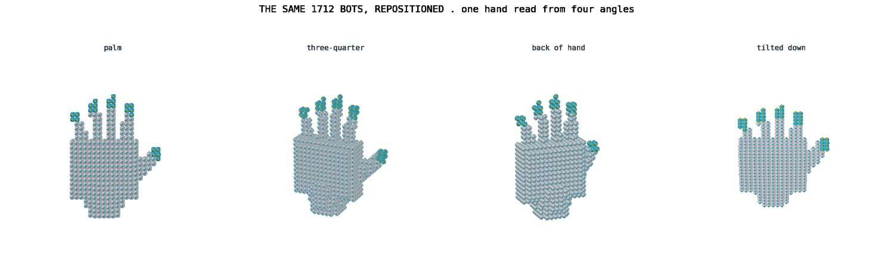
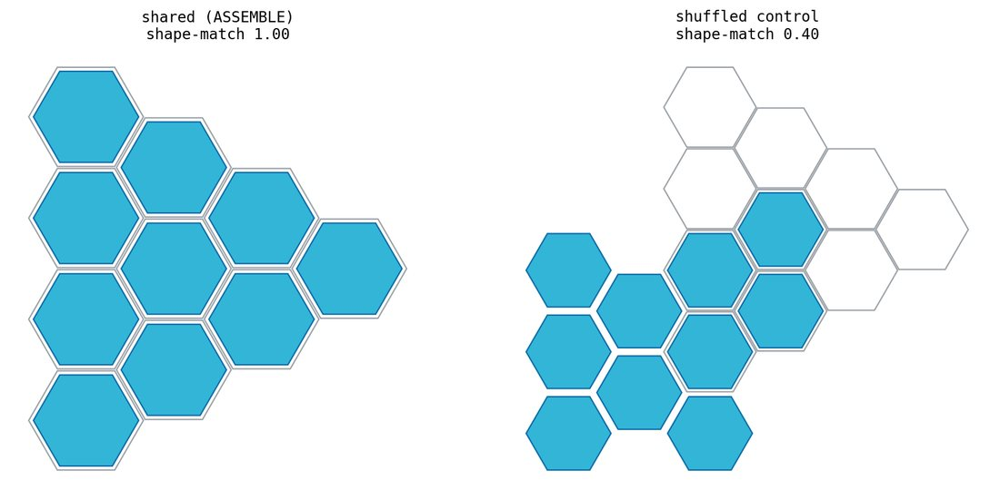
← Hardware
Software built and tested. Hardware pilot planned
A low-cost refreshable tactile graphics display for blind students. Commercial displays cost $5,000 to $12,000.
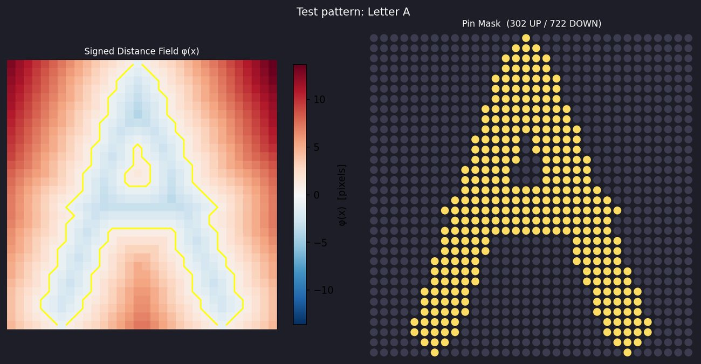
← Hardware
Research in progress. Patent application being prepared
Can one scalar field govern both what you see and what you feel in mid-air?
4 projects · tap one to open
← Ventures
Registered company
Software that applies a written rulebook to a fact, makes a decision and signs a record that anyone can check later.
← Ventures
Built. Public demo
Customs classification with a citation behind every code, for importers who have to defend the decision.
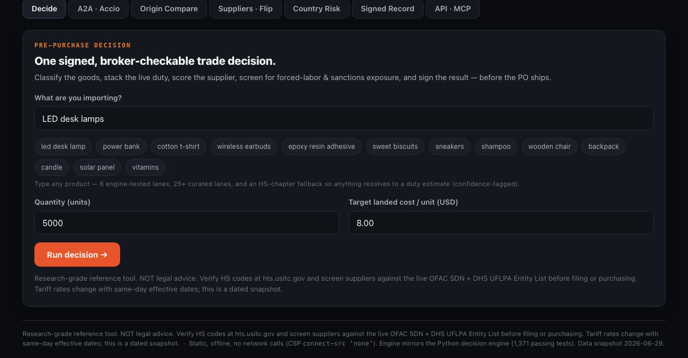
← Ventures
HALO pre-alpha, code public. Goldentime demo public
Two sides of voice phishing in Korea: catch the scam on the phone, then guide recovery in the first 30 minutes after it lands.
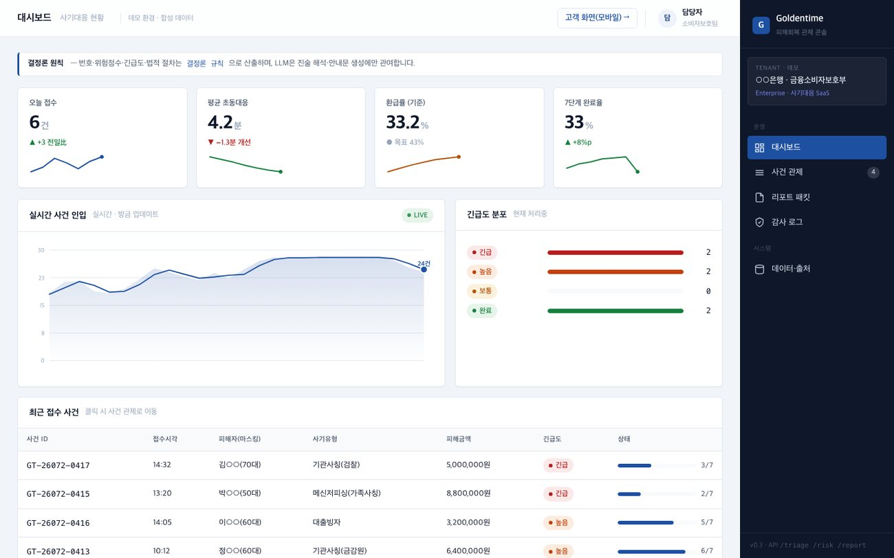
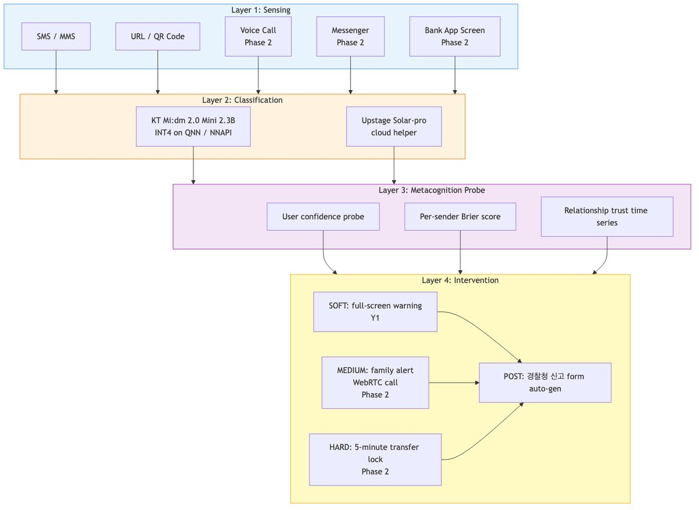
← Ventures
Prototype. No pilot has run
Older patients collect prescriptions from hospitals that never talk to each other. Olyak checks the combined list.
5 projects · tap one to open
← Civic
Proposed to Seongnam City
I chair the Seongnam Youth Council. Two draft ordinances came out of my term as chair.
← Civic
Built. Finals, 8th Korea Code Fair Hackathon
An agent that uses public data to decide where existing city infrastructure should serve older people, then drafts the action for a human to approve.
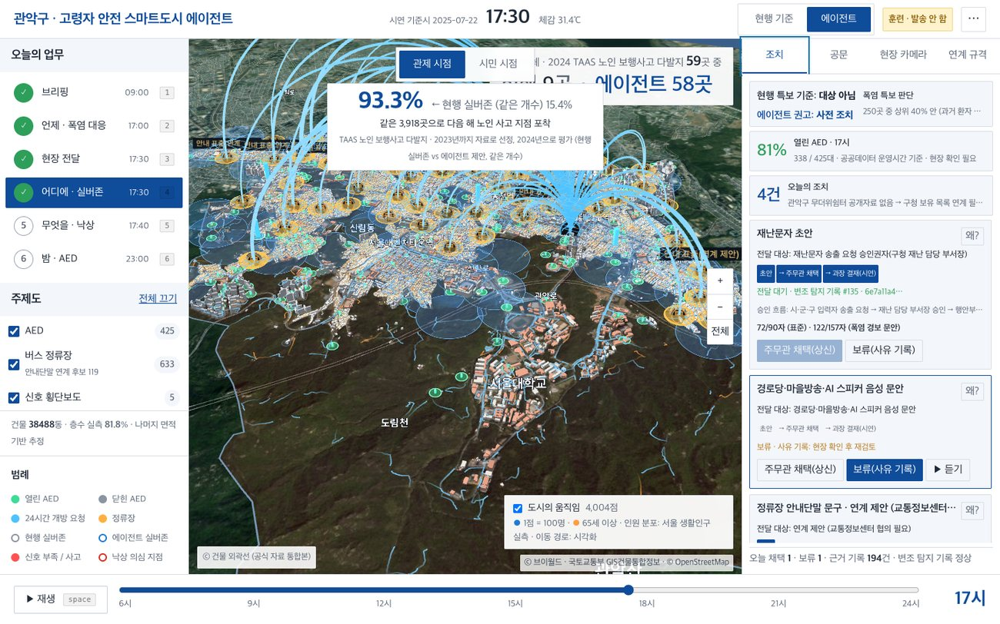
← Civic
Built. Tested on real and simulated records
The AI ordinance compiled into code. Each article maps to one module that performs the check it requires.
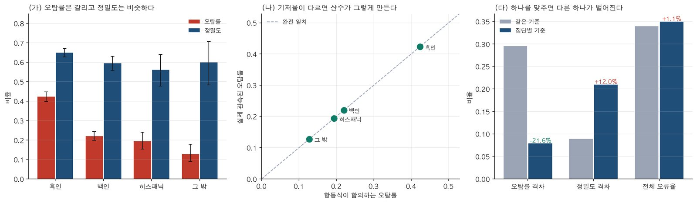
← Civic
FarmPilot prototype, code public. ReField at idea stage
Two tools for small farms: crop disease diagnosis from a phone photo, and satellite detection of idle farmland.
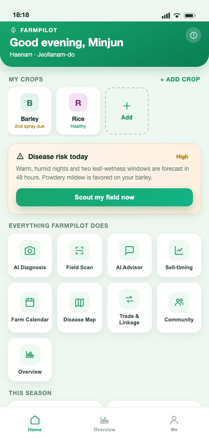
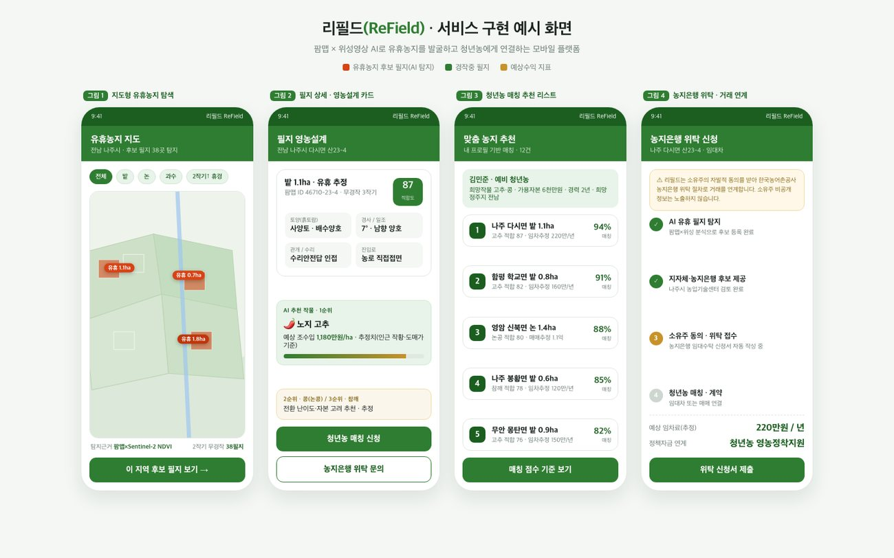
← Civic
Model failed its registered test. No projections published
A development and inequality simulation for Ethiopia. It set its own pass mark, missed it, and I published the miss.
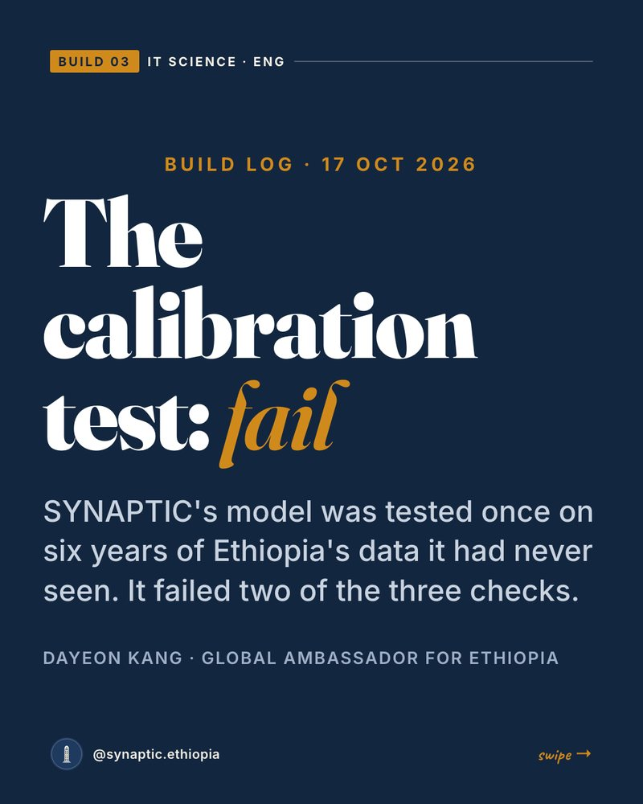